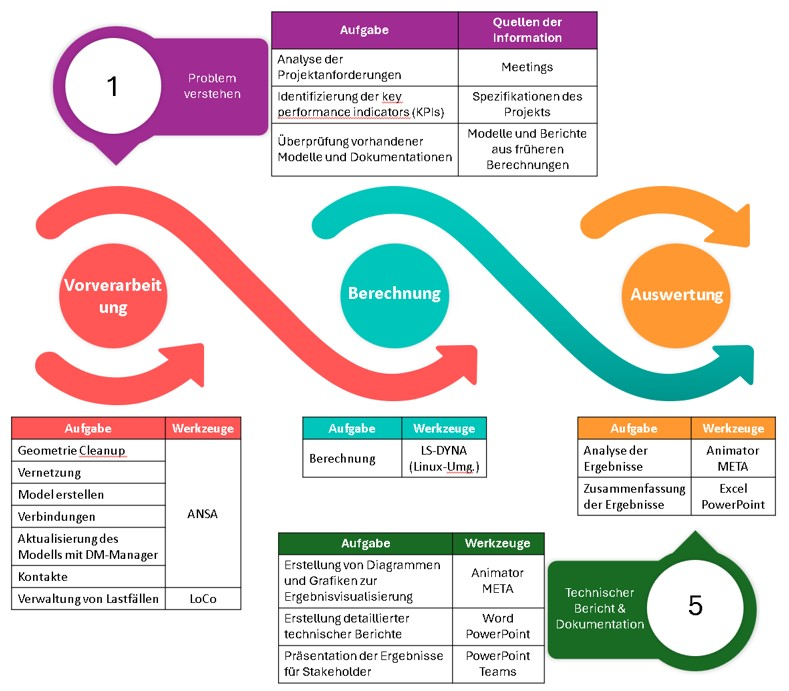

Berechnungsingenieur - Fahrzeugsicherheit
Kube GmbH Ingenieurbüro, Weissach
Aufgaben
Werkzeuge
Über das Unternehmen
Die in Plochingen, Deutschland ansässige Kube GmbH Ingenieurbüro ist ein führendes Ingenieurbüro, das sich auf die Entwicklung von leichten, sicherheitsorientierten Fahrgestell- und modernen Automobilsystemlösungen spezialisiert hat. Kube entwickelt maßgeschneiderte Modelle, Verfahren und Softwarelösungen, die höchste Leistungs- und Sicherheitsanforderungen erfüllen, mit einem besonderen Fokus auf Industrie 4.0, Fahrerassistenzsysteme und Fahrzeugsicherheit. Das Unternehmen ist hervorragend in der Konstruktion, Entwicklung und Prototypenerstellung innovativer Technologien, was schnellere Entwicklungszeiten und geringere Risiken garantiert. An der Spitze der automobilen Ingenieurinnovation steht die Kube GmbH für die Umsetzung von Ideen in reale, nutzbare Lösungen.
Unternehmenslink: Kube GmbH Ingenieurbüro